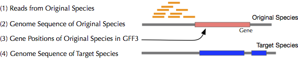
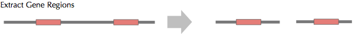
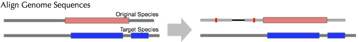
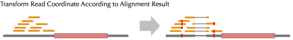

As example, we here transform coordinate of ChIP-seq reads on D. simulans to D. melanogaster genome. "sample" directory contains chromosome 2R of both D. simulans and D. melanogaster, and SAM file contains ChIP-seq result mapped onto D. simulans genome. Scripts will suggest you the next action. By changing settings in configuration file "settings.ini", you can change both input and output file names.
If you have Git, you can clone latest version by running:
git clone git://github.com/sesejun/recotDon't worry when you do not have Git! Download the zipped codes and extract it.
First, extract gene sequences. "recot_extract.py" will generate "sample/dsim_geneseq.fasta" which contains gene and its regulatory regions (upstream and downstream 500bp as default).
python recot_extract.py -c settings_sample.ini
Map the sequences in "data/dsim_geneseq.fasta" onto target genome. We here use GMAP to map the sequences.
gmap_build -d dme sample/dmel-2R.fasta gmap -f samse -d dme sample/dsim_geneseq.fasta > sample/dsim_geneseq_on_dme.samBy changing gmap option "samse" to "sampe", it can handle paired end sequence. Then, you can select the best matched sequences from the SAM file.
python recot_rm_overlap.py -c settings_sample.ini

Map your reads onto original genome sequence (In the running example, D. simulans). Mapped result file in this sample is "data/ERR020078-2R-1M.sam", which only contains reads mapped onto the beginnings of 1Mbp of chromosome 2R.
Combine gene sequence mapped result against reference sequence and read mapped result against target genes/genomes.
python recot_combine.py -c settings_sample.ini python recot_convert.py -c settings_sample.iniThis step may require a few hours (depend on number of reads and CPU/Disk speed).

When recot_convert.py is successfully finished, the script shows the way to convert the result SAM file into BAM file.
samtools view -bt sample/dmel-2R.fasta -o your_read.bam sample/ERR020078.on_dme.sam samtools sort your_read.bam sample/ERR020078.on_dme.bam samtools index sample/ERR020078.on_dme.bamTo visualize the result in IGV, you can use the ERR020078.on_dme.bam (and ERR020078.on_dme.bam.bai).
By adding option "-c", you can change the file name from "settings.ini".
Yes. First, you prepare gene sequences in FASTA format (From RNA-seq reads, you can use transcriptome assembly software such as Trinity and OASIS). Then, by skipping "recot_extract.py" in the above procedure and specify the result file at gene_seq_file parameter in "setting.ini", you can transform coordinate of the reads.
recot_rm_overlap.py can handle the orthologous genes. To use the relationships,
Bugs in mapping software or our scripts sometime cause the problem. In the case, please run the following command and then use the "output.sam" instead of input.sam:
python recot_check_cigar.py input.sam output.sam errorreads.sam
If you can use SUN(Oracle) Grid Engine or Torque, you can parallelize the transformation in "recot_convert.py" by using array job. First, you need to count the number of chromosomes (contigs) of your original species (Suppose that we have 20 contigs). Then, run the following command instead of running "recot_convert.py" (for Sun Grid Engine):
qsub -t1-20:1 qsub_convert.sh python recot_samjoin.pyTo change a setting file, you need to add "-c" in the command in qsub_convert.sh and run recot_samjoin.py with -c option.
BSD License